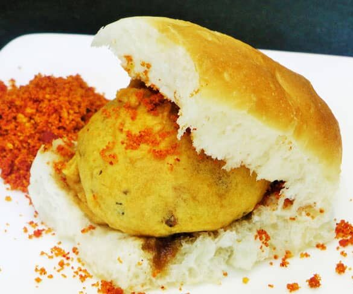

Vada Pav Recipe

Description
The quintessential Marathi snack that consists of a flavourful batata vada kept in a fresh pav. The simplicity and popularity of this dish has made it synonymous with the city of Mumbai.
- Pav
- Potato
- Oil
- Chilli powder, Garlic, Hing, Green Chillies
- Mustard seeds
- Coriander leaves
- Gram flour(besan), turmeric powder, Water
Steps
- Boil ,then mash the potatoes in a bowl.
- Make a chilli-garlic paste in a mortar.
- Heat some oil in a pan, add the mustard seeds to it.
- Add curry leaves and hing, saute for a while.
- Add the chilli-garlic paste, along with some turmeric powder into the pan.
- Fry until the smell of garlic is absent, then pour the mixture on top of the mashed potatoes.
- Add coriander leaves(chopped), and salt as required.
- Make medium-sized balls from the micture and keep it aside.
- In a different bowl, mix gram flour, hing, turmeric powder, salt and half a cup of water. This is for the batter.
- Dip the balls in the batter and fry in a Kadai after the oil becomes hot.
- After the vada is fried properly to a crisp, place it inside a pav.